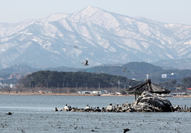
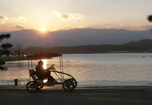
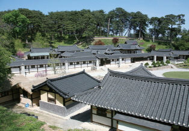
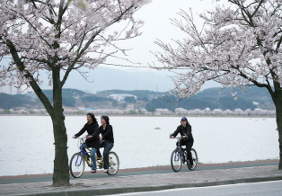
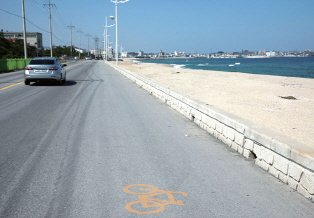
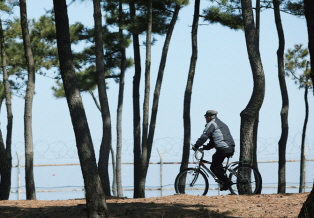

강릉 경호포 산소길
거울처럼 맑은 호수를 따라 달리는 생태탐방로
강릉의 경포는 옛날부터 달빛 교교한 밤에 경포대에서 술잔을 기울이면 하늘과 호수, 바다와 술잔, 그리고 님의 눈동자에 하나씩 모두 다섯 개의 달이 떠오를 만큼 운치가 그윽한 곳으로 유명하다.
이처럼 풍광 좋고 운치 그윽한 경포에는 경포호 산소길이 개설돼있다. 강원도 곳곳의 명승지와 절경을 두루 거쳐 가는 ‘강원 삼천리(1,200km)산소길’ 중에서도 으뜸으로 꼽힐 만큼 아름다운 호반길이다. 자전거길과 도보 전용로가 나란히 이어져 있어서 걷기도 좋고 자전거를 타고 달리기에도 안성맞춤이다. 순환형길이므로 어디서 출발해도 제자리로 되돌아온다.
이 길은 바다와 가깝고 호수를 옆구리에 끼고 있으면서도 시종 듬직한 산줄기를 바라볼 수 있다는 점이 무엇보다 매력적이다.






찾아가는길
- 서울의 동서울종합터미널과 경부고속터미널에서 강릉 행 고속버스 수시로 출발
- 영동고속도로 횡성휴게소(하행선)에서 환승도 가능
- 부산, 대구, 광주, 인천, 대전, 광명 등 지에서도 강릉행 직행버스, 고속버스가 운행
버스
- 서울역에서 강릉역으로 가는 KTX 운행
- 서울 청량리역에서는 강릉행 무궁화호 열차가 1일 6회 출발
열차
문의
- 화천군 관광안내소 : ☎ 033-440-2515
체험 후기
등록된 체험후기가 없습니다.